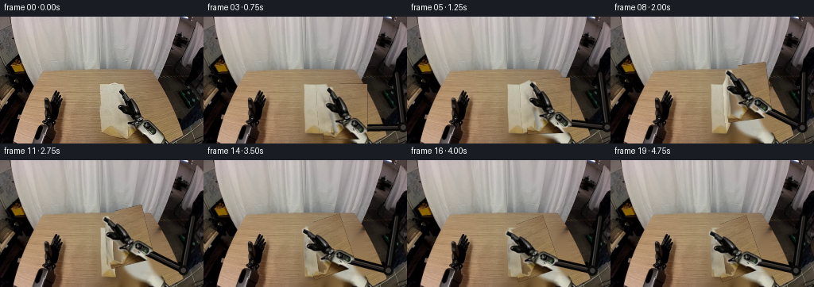
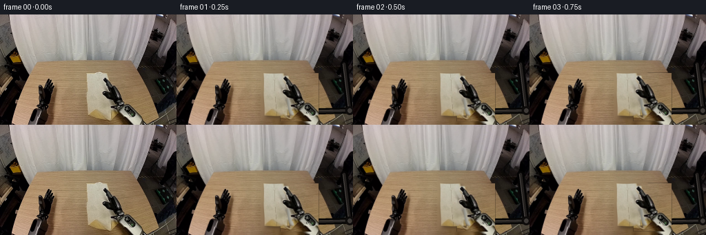
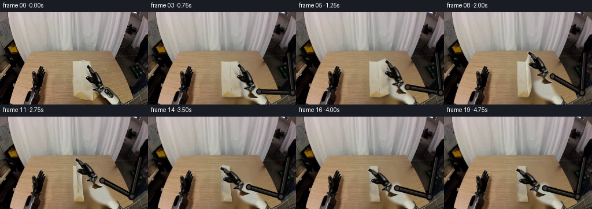
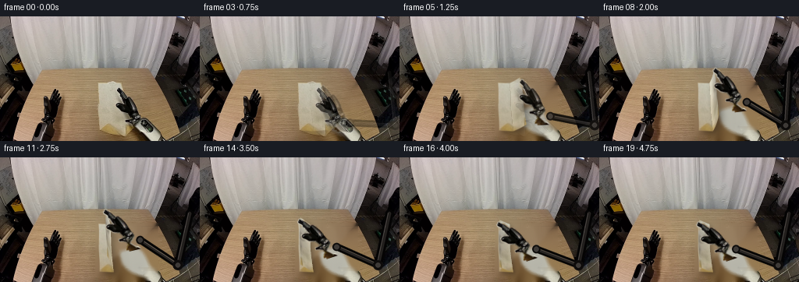
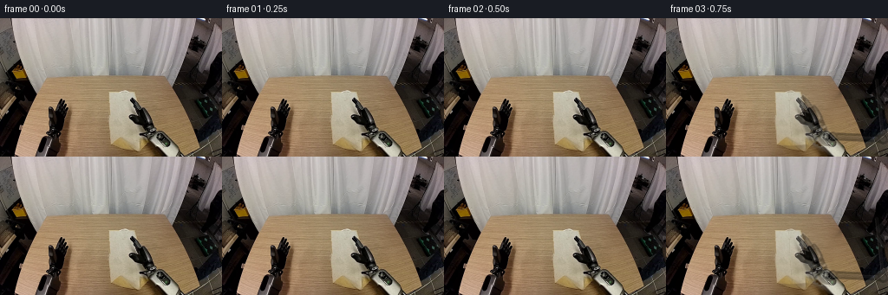

CODING AGENTS AS PIXEL WORLD MODELS
traex/DeepSeek-V4.1-Flash · common50_0029
点击播放 · 原生 RGB 像素
逐轮保存的候选
回放视频、检查图与代码变化。
每份候选均可单独播放。实际图片检查记录在下方工具轨迹中。
候选 01播放与检查图
点击播放 · 原生 RGB 像素


展开代码变化
--- 上一保存版本
+++ 本次保存版本
@@ -0,0 +1,464 @@
+from pathlib import Path
+
+import cv2
+import numpy as np
+from PIL import Image, ImageDraw
+
+import artifact_io
+
+
+CASE_DIR = Path(__file__).resolve().parent
+WIDTH, HEIGHT, N_FRAMES, FPS = 256, 160, 20, 4
+RENDER_SCALE = 3
+
+
+def smoothstep(value):
+ value = np.clip(value, 0.0, 1.0)
+ return value * value * (3.0 - 2.0 * value)
+
+
+def cloth_point(u, v, fold_t):
+ """Map cloth parameters to image space for the two halves."""
+ x_left = 126.0 + 1.2 * v + 0.35 * np.sin(3.0 * np.pi * v)
+ x_right = 156.0 + 8.0 * v + 0.55 * np.sin(2.0 * np.pi * v + 0.4)
+ y_top = 84.5 + 0.65 * np.sin(np.pi * u)
+ y_bottom = 147.0 + 1.0 * np.sin(np.pi * u)
+
+ x0 = x_left + u * (x_right - x_left)
+ y0 = y_top + v * (y_bottom - y_top)
+ if u <= 0.5:
+ pull = 1.25 * fold_t * (u / 0.5) ** 2 * np.sin(np.pi * v)
+ return np.array([x0 - pull, y0])
+
+ theta = np.pi * fold_t
+ du = (u - 0.5) / 0.5
+ x_fold = 0.5 * (x_left + x_right)
+ x = x_fold + (x0 - x_fold) * np.cos(theta)
+ x += 1.1 * np.sin(np.pi * du) * np.sin(theta)
+ lift = (21.0 + 7.0 * np.sin(np.pi * v)) * du ** 1.08 * np.sin(theta)
+ y = y0 - lift
+ return np.array([x, y])
+
+
+def make_cloth_mesh(fold_t):
+ nu, nv = 18, 30
+ u_values = np.linspace(0.0, 1.0, nu + 1)
+ v_values = np.linspace(0.0, 1.0, nv + 1)
+ points = np.empty((nv + 1, nu + 1, 2), dtype=np.float32)
+ for j, v in enumerate(v_values):
+ for i, u in enumerate(u_values):
+ points[j, i] = cloth_point(u, v, fold_t)
+ return points
+
+
+def cloth_texture(source):
+ tw, th = 72, 104
+ u = np.linspace(0.0, 1.0, tw, dtype=np.float32)[None, :]
+ v = np.linspace(0.0, 1.0, th, dtype=np.float32)[:, None]
+ x_left = 126.0 + 1.2 * v + 0.35 * np.sin(3.0 * np.pi * v)
+ x_right = 156.0 + 8.0 * v + 0.55 * np.sin(2.0 * np.pi * v + 0.4)
+ y_top = 84.5 + 0.65 * np.sin(np.pi * u)
+ y_bottom = 147.0 + 1.0 * np.sin(np.pi * u)
+ map_x = x_left + u * (x_right - x_left)
+ map_y = y_top + v * (y_bottom - y_top)
+
+ texture = cv2.remap(
+ source,
+ map_x.astype(np.float32),
+ map_y.astype(np.float32),
+ cv2.INTER_LINEAR,
+ borderMode=cv2.BORDER_REFLECT,
+ )
+ lum = texture.mean(axis=2)
+ invalid = (lum < 112.0).astype(np.uint8) * 255
+ invalid = cv2.dilate(invalid, np.ones((3, 3), np.uint8), iterations=1)
+ texture = cv2.inpaint(texture, invalid, 4, cv2.INPAINT_TELEA)
+
+ yy, xx = np.mgrid[0:th, 0:tw]
+ weave = 1.15 * np.sin(xx * 1.55 + yy * 0.17) + 0.8 * np.sin(yy * 1.9)
+ texture = np.clip(texture.astype(np.float32) + weave[:, :, None] * 0.35, 0, 255)
+
+ edge = np.minimum(
+ np.minimum(u, 1.0 - u),
+ np.minimum(v, 1.0 - v),
+ )
+ alpha = np.clip(edge / 0.018, 0.0, 1.0).astype(np.float32)
+ return texture.astype(np.uint8), alpha
+
+
+def make_clean_plate(source):
+ height, width = source.shape[:2]
+ dynamic = np.zeros((height, width), dtype=np.uint8)
+
+ cloth_poly = np.array([[123, 81], [160, 81], [168, 151], [123, 151]], np.int32)
+ cv2.fillPoly(dynamic, [cloth_poly], 255)
+
+ region = np.zeros_like(dynamic)
+ region[86:157, 145:201] = 255
+ dark = ((source.mean(axis=2) < 122.0) & (region > 0)).astype(np.uint8)
+ count, labels, stats, _ = cv2.connectedComponentsWithStats(dark, 8)
+ if count > 1:
+ component = 1 + int(np.argmax(stats[1:, cv2.CC_STAT_AREA]))
+ robot = (labels == component).astype(np.uint8) * 255
+ robot = cv2.morphologyEx(robot, cv2.MORPH_CLOSE, np.ones((5, 5), np.uint8))
+ robot = cv2.dilate(robot, np.ones((3, 3), np.uint8), iterations=1)
+ dynamic = cv2.bitwise_or(dynamic, robot)
+
+ dynamic = cv2.dilate(dynamic, np.ones((3, 3), np.uint8), iterations=1)
+ plate = cv2.inpaint(source, dynamic, 6, cv2.INPAINT_TELEA)
+
+ # Restore the horizontal grain and table lighting that inpainting tends to flatten.
+ valid = (dynamic == 0) & (source.mean(axis=2) > 68.0)
+ row_fill = plate.copy()
+ for y in range(62, height):
+ row = source[y]
+ valid_x = np.flatnonzero(valid[y])
+ if len(valid_x) < 2:
+ continue
+ for x in np.flatnonzero(dynamic[y]):
+ left = valid_x[valid_x < x]
+ right = valid_x[valid_x > x]
+ if len(left) and len(right):
+ xl, xr = int(left[-1]), int(right[0])
+ if xr - xl < 42:
+ blend = (x - xl) / max(1, xr - xl)
+ row_fill[y, x] = (
+ (1.0 - blend) * row[xl].astype(np.float32)
+ + blend * row[xr].astype(np.float32)
+ )
+ rng = np.random.default_rng(7)
+ grain = cv2.GaussianBlur(rng.normal(0.0, 1.0, (height, width)).astype(np.float32), (0, 0), 1.0)
+ grain = cv2.GaussianBlur(grain, (0, 0), 0.55)
+ row_fill = row_fill.astype(np.float32) + grain[:, :, None] * np.array([2.1, 1.5, 0.9])
+ plate = np.where(dynamic[:, :, None] > 0, 0.72 * plate + 0.28 * row_fill, plate)
+ plate = cv2.GaussianBlur(plate.astype(np.float32), (0, 0), 0.45)
+ return np.clip(plate, 0, 255).astype(np.uint8)
+
+
+def extract_gripper(source):
+ x0, x1, y0, y1 = 145, 201, 87, 157
+ crop = source[y0:y1, x0:x1]
+ dark = (crop.mean(axis=2) < 124.0).astype(np.uint8)
+ count, labels, stats, _ = cv2.connectedComponentsWithStats(dark, 8)
+ component = 1 + int(np.argmax(stats[1:, cv2.CC_STAT_AREA]))
+ mask = (labels == component).astype(np.uint8) * 255
+ mask = cv2.morphologyEx(mask, cv2.MORPH_CLOSE, np.ones((5, 5), np.uint8))
+ mask = cv2.dilate(mask, np.ones((3, 3), np.uint8), iterations=1)
+
+ ys, xs = np.where(mask > 0)
+ bx0, bx1 = max(0, xs.min() - 1), min(crop.shape[1], xs.max() + 2)
+ by0, by1 = max(0, ys.min() - 1), min(crop.shape[0], ys.max() + 2)
+ rgb = crop[by0:by1, bx0:bx1].copy()
+ alpha = cv2.GaussianBlur(mask[by0:by1, bx0:bx1], (0, 0), 0.55)
+ return rgb, alpha, (x0 + bx0, y0 + by0), (152.0, 93.0), (188.0, 143.0)
+
+
+def rasterize_map(points, nu, nv, tw, th, scale, u_start, u_end):
+ height, width = HEIGHT * scale, WIDTH * scale
+ map_x = np.full((height, width), -1.0, dtype=np.float32)
+ map_y = np.full((height, width), -1.0, dtype=np.float32)
+
+ for j in range(nv):
+ for i in range(nu):
+ p00 = points[j, i] * scale
+ p10 = points[j, i + 1] * scale
+ p01 = points[j + 1, i] * scale
+ p11 = points[j + 1, i + 1] * scale
+ s00 = np.array([(u_start + (u_end - u_start) * i / nu) * (tw - 1), j / nv * (th - 1)], np.float32)
+ s10 = np.array(
+ [(u_start + (u_end - u_start) * (i + 1) / nu) * (tw - 1), j / nv * (th - 1)],
+ np.float32,
+ )
+ s01 = np.array(
+ [(u_start + (u_end - u_start) * i / nu) * (tw - 1), (j + 1) / nv * (th - 1)],
+ np.float32,
+ )
+ s11 = np.array(
+ [
+ (u_start + (u_end - u_start) * (i + 1) / nu) * (tw - 1),
+ (j + 1) / nv * (th - 1),
+ ],
+ np.float32,
+ )
+
+ for p0, p1, p2, s0, s1, s2 in (
+ (p00, p10, p11, s00, s10, s11),
+ (p00, p11, p01, s00, s11, s01),
+ ):
+ lo_x = max(0, int(np.floor(min(p0[0], p1[0], p2[0]))) - 1)
+ hi_x = min(width, int(np.ceil(max(p0[0], p1[0], p2[0]))) + 2)
+ lo_y = max(0, int(np.floor(min(p0[1], p1[1], p2[1]))) - 1)
+ hi_y = min(height, int(np.ceil(max(p0[1], p1[1], p2[1]))) + 2)
+ if lo_x >= hi_x or lo_y >= hi_y:
+ continue
+
+ yy, xx = np.mgrid[lo_y:hi_y, lo_x:hi_x]
+ xx = xx.astype(np.float32) + 0.5
+ yy = yy.astype(np.float32) + 0.5
+ v0 = p1 - p0
+ v1 = p2 - p0
+ den = v0[0] * v1[1] - v0[1] * v1[0]
+ if abs(den) < 1e-5:
+ continue
+ qx = xx - p0[0]
+ qy = yy - p0[1]
+ wa = (qx * v1[1] - qy * v1[0]) / den
+ wb = (v0[0] * qy - v0[1] * qx) / den
+ wc = 1.0 - wa - wb
+ inside = (wa >= -0.002) & (wb >= -0.002) & (wc >= -0.002)
+ if not np.any(inside):
+ continue
+ src_x = wc * s0[0] + wa * s1[0] + wb * s2[0]
+ src_y = wc * s0[1] + wa * s1[1] + wb * s2[1]
+ map_x[lo_y:hi_y, lo_x:hi_x][inside] = src_x[inside]
+ map_y[lo_y:hi_y, lo_x:hi_x][inside] = src_y[inside]
+ return map_x, map_y
+
+
+def render_cloth(texture, alpha_texture, points, side, fold_t):
+ if side == "left":
+ nu, u_start, u_end = 9, 0.0, 0.5
+ sub = points[:, 0:10]
+ else:
+ nu, u_start, u_end = 9, 0.5, 1.0
+ sub = points[:, 9:19]
+ th, tw = texture.shape[:2]
+ map_x, map_y = rasterize_map(sub, nu, 30, tw, th, RENDER_SCALE, u_start, u_end)
+
+ sampled = cv2.remap(
+ texture,
+ map_x,
+ map_y,
+ cv2.INTER_LINEAR,
+ borderMode=cv2.BORDER_CONSTANT,
+ borderValue=(0, 0, 0),
+ )
+ alpha = cv2.remap(
+ alpha_texture,
+ map_x,
+ map_y,
+ cv2.INTER_LINEAR,
+ borderMode=cv2.BORDER_CONSTANT,
+ borderValue=0,
+ )
+ inside = map_x >= 0
+ alpha = np.where(inside, alpha, 0.0)
+
+ u_map = np.clip(map_x / max(1, tw - 1), 0.0, 1.0)
+ v_map = np.clip(map_y / max(1, th - 1), 0.0, 1.0)
+ theta = np.pi * fold_t
+ if side == "left":
+ shade = 1.0 - 0.09 * fold_t * np.exp(-((u_map - 0.5) / 0.09) ** 2)
+ else:
+ du = np.clip((u_map - 0.5) / 0.5, 0.0, 1.0)
+ shade = (
+ 1.0
+ + 0.13 * np.sin(theta) * np.exp(-((du - 0.12) / 0.24) ** 2)
+ - 0.10 * np.sin(theta) * du**2
+ - 0.055 * smoothstep((fold_t - 0.78) / 0.22)
+ )
+ shade += 0.07 * np.sin(theta) ** 0.8 * np.exp(-(du / 0.045) ** 2)
+
+ sampled = np.clip(sampled.astype(np.float32) * shade[:, :, None], 0, 255)
+ premul = sampled * alpha[:, :, None]
+ small_rgb = cv2.resize(premul, (WIDTH, HEIGHT), interpolation=cv2.INTER_AREA)
+ small_a = cv2.resize(alpha, (WIDTH, HEIGHT), interpolation=cv2.INTER_AREA)
+ rgb = np.divide(small_rgb, small_a[:, :, None], out=np.zeros_like(small_rgb), where=small_a[:, :, None] > 1e-4)
+ return rgb, np.clip(small_a, 0.0, 1.0)
+
+
+def composite(base, rgb, alpha):
+ alpha3 = alpha[:, :, None]
+ return base * (1.0 - alpha3) + rgb * alpha3
+
+
+def ik_elbow(shoulder, target, length_a, length_b):
+ delta = target - shoulder
+ distance = float(np.linalg.norm(delta))
+ distance = np.clip(distance, abs(length_a - length_b) + 0.01, length_a + length_b - 0.01)
+ unit = delta / max(float(np.linalg.norm(delta)), 1e-5)
+ along = (length_a**2 - length_b**2 + distance**2) / (2.0 * distance)
+ height = np.sqrt(max(0.0, length_a**2 - along**2))
+ midpoint = shoulder + unit * along
+ perpendicular = np.array([-unit[1], unit[0]])
+ return midpoint - height * perpendicular
+
+
+def draw_arm(frame, shoulder, elbow, wrist):
+ scale = RENDER_SCALE
+ size = (WIDTH * scale, HEIGHT * scale)
+ layer = Image.new("RGBA", size, (0, 0, 0, 0))
+ draw = ImageDraw.Draw(layer)
+ shoulder = np.asarray(shoulder) * scale
+ elbow = np.asarray(elbow) * scale
+ wrist = np.asarray(wrist) * scale
+
+ def capsule(a, b, width, color):
+ draw.line([tuple(a), tuple(b)], fill=color, width=int(width))
+ radius = width / 2
+ for point in (a, b):
+ draw.ellipse(
+ [point[0] - radius, point[1] - radius, point[0] + radius, point[1] + radius],
+ fill=color,
+ )
+
+ capsule(shoulder, elbow, 10.5 * scale, (5, 4, 4, 255))
+ capsule(elbow, wrist, 9.5 * scale, (7, 6, 5, 255))
+ capsule(shoulder, elbow, 4.2 * scale, (34, 31, 29, 255))
+ capsule(elbow, wrist, 3.8 * scale, (39, 36, 34, 255))
+
+ direction = elbow - shoulder
+ direction = direction / max(float(np.linalg.norm(direction)), 1e-5)
+ offset = np.array([-direction[1], direction[0]]) * 1.6 * scale
+ draw.line(
+ [tuple(shoulder + offset), tuple(elbow + offset)],
+ fill=(92, 86, 82, 210),
+ width=max(1, int(1.15 * scale)),
+ )
+ direction = wrist - elbow
+ direction = direction / max(float(np.linalg.norm(direction)), 1e-5)
+ offset = np.array([-direction[1], direction[0]]) * 1.4 * scale
+ draw.line(
+ [tuple(elbow + offset), tuple(wrist + offset)],
+ fill=(83, 78, 75, 205),
+ width=max(1, int(1.05 * scale)),
+ )
+
+ for point, radius in ((elbow, 6.4), (wrist, 5.2)):
+ p = point
+ r = radius * scale
+ draw.ellipse([p[0] - r, p[1] - r, p[0] + r, p[1] + r], fill=(14, 12, 11, 255))
+ rr = 3.2 * scale
+ draw.ellipse([p[0] - rr, p[1] - rr, p[0] + rr, p[1] + rr], fill=(61, 57, 54, 255))
+
+ layer = layer.resize((WIDTH, HEIGHT), Image.Resampling.LANCZOS)
+ overlay = np.asarray(layer).astype(np.float32)
+ alpha = overlay[:, :, 3:4] / 255.0
+ return frame * (1.0 - alpha) + overlay[:, :, :3] * alpha
+
+
+def rotate_vector(vector, angle):
+ c, s = np.cos(angle), np.sin(angle)
+ return np.array([c * vector[0] - s * vector[1], s * vector[0] + c * vector[1]])
+
+
+def draw_gripper(frame, sprite, sprite_alpha, origin, grip_source, base_source, contact, rotation):
+ rgb, alpha, (ox, oy), grip_source, base_source = sprite, sprite_alpha, origin, grip_source, base_source
+ source_grip = grip_source - np.array([ox, oy])
+ source_base = base_source - np.array([ox, oy])
+ vector = rotate_vector(source_base - source_grip, rotation)
+ destination_base = contact + vector
+
+ src_grip_crop = source_grip
+ src_base_crop = source_base
+ angle = rotation
+ scale = RENDER_SCALE
+ c, s = np.cos(angle), np.sin(angle)
+ transform = np.array(
+ [
+ [c, -s, scale * (contact[0] - c * src_grip_crop[0] + s * src_grip_crop[1])],
+ [s, c, scale * (contact[1] - s * src_grip_crop[0] - c * src_grip_crop[1])],
+ ],
+ dtype=np.float32,
+ )
+
+ big_rgb = cv2.resize(rgb, None, fx=scale, fy=scale, interpolation=cv2.INTER_CUBIC)
+ big_alpha = cv2.resize(alpha, None, fx=scale, fy=scale, interpolation=cv2.INTER_LINEAR)
+ warped_rgb = cv2.warpAffine(
+ big_rgb,
+ transform,
+ (WIDTH * scale, HEIGHT * scale),
+ flags=cv2.INTER_LINEAR,
+ borderMode=cv2.BORDER_CONSTANT,
+ borderValue=(0, 0, 0),
+ )
+ warped_alpha = cv2.warpAffine(
+ big_alpha,
+ transform,
+ (WIDTH * scale, HEIGHT * scale),
+ flags=cv2.INTER_LINEAR,
+ borderMode=cv2.BORDER_CONSTANT,
+ borderValue=0,
+ )
+ small_rgb = cv2.resize(warped_rgb, (WIDTH, HEIGHT), interpolation=cv2.INTER_AREA)
+ small_alpha = cv2.resize(warped_alpha, (WIDTH, HEIGHT), interpolation=cv2.INTER_AREA) / 255.0
+ return composite(frame, small_rgb.astype(np.float32), np.clip(small_alpha, 0.0, 1.0)), destination_base
+
+
+def add_cloth_shadow(frame, alpha, fold_t):
+ theta = np.pi * fold_t
+ shift_x = int(round(2.5 + 3.0 * np.sin(theta)))
+ shift_y = int(round(2.5 + 2.0 * np.sin(theta)))
+ shadow = np.zeros_like(alpha)
+ y1, y2 = max(0, shift_y), min(HEIGHT, HEIGHT + shift_y)
+ x1, x2 = max(0, shift_x), min(WIDTH, WIDTH + shift_x)
+ shadow[y1:y2, x1:x2] = alpha[y1 - shift_y : y2 - shift_y, x1 - shift_x : x2 - shift_x]
+ shadow = cv2.GaussianBlur(shadow, (0, 0), 2.3 + 1.8 * np.sin(theta))
+ strength = 0.32 - 0.08 * fold_t
+ return frame * (1.0 - shadow[:, :, None] * strength)
+
+
+def main():
+ source = np.asarray(Image.open(CASE_DIR / "first_frame.png").convert("RGB"), dtype=np.uint8)
+ assert source.shape == (HEIGHT, WIDTH, 3)
+
+ clean_plate = make_clean_plate(source)
+ texture, alpha_texture = cloth_texture(source)
+ sprite = extract_gripper(source)
+
+ frames = []
+ for frame_index in range(N_FRAMES):
+ if frame_index == 0:
+ frames.append(source.copy())
+ continue
+
+ fold_t = float(smoothstep((frame_index - 2.5) / 13.0))
+ settle = smoothstep((frame_index - 16.0) / 3.0)
+ if frame_index >= 17:
+ fold_t = min(1.0, fold_t + 0.012 * (frame_index - 16))
+
+ frame = clean_plate.astype(np.float32)
+ points = make_cloth_mesh(fold_t)
+ left_rgb, left_alpha = render_cloth(texture, alpha_texture, points, "left", fold_t)
+ right_rgb, right_alpha = render_cloth(texture, alpha_texture, points, "right", fold_t)
+
+ frame = add_cloth_shadow(frame, np.maximum(left_alpha, right_alpha), fold_t)
+
+ contact = cloth_point(1.0, 0.105, fold_t)
+ rotation = np.deg2rad(-19.0 * fold_t)
+ sprite_rgb, sprite_alpha, sprite_origin, grip_source, base_source = sprite
+ source_grip = grip_source - np.array(sprite_origin)
+ source_base = base_source - np.array(sprite_origin)
+ wrist = contact + rotate_vector(source_base - source_grip, rotation)
+
+ shoulder = np.array([243.0, 72.0])
+ elbow = ik_elbow(shoulder, wrist, 68.0, 58.0)
+ frame = draw_arm(frame, shoulder, elbow, wrist)
+
+ frame = composite(frame, left_rgb, left_alpha)
+ frame = composite(frame, right_rgb, right_alpha)
+
+ frame, actual_base = draw_gripper(
+ frame,
+ sprite_rgb,
+ sprite_alpha,
+ sprite_origin,
+ grip_source,
+ base_source,
+ contact,
+ rotation,
+ )
+
+ # A very small settle gives the final pose a stable, mechanical stop.
+ if settle > 0:
+ frame = np.clip(frame, 0, 255)
+ frames.append(np.clip(frame, 0, 255).astype(np.uint8))
+
+ frames = np.stack(frames, axis=0)
+ assert frames.shape == (N_FRAMES, HEIGHT, WIDTH, 3)
+ assert np.array_equal(frames[0], source)
+ artifact_io.save(frames, CASE_DIR)
+
+
+if __name__ == "__main__":
+ main()
候选 02播放与检查图
点击播放 · 原生 RGB 像素

展开代码变化
--- 上一保存版本
+++ 本次保存版本
@@ -136,21 +136,21 @@
def extract_gripper(source):
- x0, x1, y0, y1 = 145, 201, 87, 157
+ x0, x1, y0, y1 = 145, 201, 89, 151
crop = source[y0:y1, x0:x1]
- dark = (crop.mean(axis=2) < 124.0).astype(np.uint8)
+ dark = (crop.mean(axis=2) < 55.0).astype(np.uint8)
count, labels, stats, _ = cv2.connectedComponentsWithStats(dark, 8)
component = 1 + int(np.argmax(stats[1:, cv2.CC_STAT_AREA]))
mask = (labels == component).astype(np.uint8) * 255
- mask = cv2.morphologyEx(mask, cv2.MORPH_CLOSE, np.ones((5, 5), np.uint8))
+ mask = cv2.morphologyEx(mask, cv2.MORPH_CLOSE, np.ones((3, 3), np.uint8))
mask = cv2.dilate(mask, np.ones((3, 3), np.uint8), iterations=1)
ys, xs = np.where(mask > 0)
bx0, bx1 = max(0, xs.min() - 1), min(crop.shape[1], xs.max() + 2)
by0, by1 = max(0, ys.min() - 1), min(crop.shape[0], ys.max() + 2)
rgb = crop[by0:by1, bx0:bx1].copy()
- alpha = cv2.GaussianBlur(mask[by0:by1, bx0:bx1], (0, 0), 0.55)
- return rgb, alpha, (x0 + bx0, y0 + by0), (152.0, 93.0), (188.0, 143.0)
+ alpha = cv2.GaussianBlur(mask[by0:by1, bx0:bx1], (0, 0), 0.42)
+ return rgb, alpha, (x0 + bx0, y0 + by0), (152.0, 93.0), (187.0, 140.0)
def rasterize_map(points, nu, nv, tw, th, scale, u_start, u_end):
候选 03播放与检查图
点击播放 · 原生 RGB 像素

展开代码变化
--- 上一保存版本
+++ 本次保存版本
@@ -30,12 +30,12 @@
pull = 1.25 * fold_t * (u / 0.5) ** 2 * np.sin(np.pi * v)
return np.array([x0 - pull, y0])
- theta = np.pi * fold_t
+ theta = np.pi * (0.92 * fold_t)
du = (u - 0.5) / 0.5
x_fold = 0.5 * (x_left + x_right)
x = x_fold + (x0 - x_fold) * np.cos(theta)
x += 1.1 * np.sin(np.pi * du) * np.sin(theta)
- lift = (21.0 + 7.0 * np.sin(np.pi * v)) * du ** 1.08 * np.sin(theta)
+ lift = (23.0 + 7.0 * np.sin(np.pi * v)) * du ** 1.08 * np.sin(theta)
y = y0 - lift
return np.array([x, y])
@@ -246,16 +246,16 @@
u_map = np.clip(map_x / max(1, tw - 1), 0.0, 1.0)
v_map = np.clip(map_y / max(1, th - 1), 0.0, 1.0)
- theta = np.pi * fold_t
+ theta = np.pi * (0.92 * fold_t)
if side == "left":
shade = 1.0 - 0.09 * fold_t * np.exp(-((u_map - 0.5) / 0.09) ** 2)
else:
du = np.clip((u_map - 0.5) / 0.5, 0.0, 1.0)
shade = (
1.0
- + 0.13 * np.sin(theta) * np.exp(-((du - 0.12) / 0.24) ** 2)
- - 0.10 * np.sin(theta) * du**2
- - 0.055 * smoothstep((fold_t - 0.78) / 0.22)
+ + 0.16 * np.sin(theta) * np.exp(-((du - 0.12) / 0.24) ** 2)
+ - 0.045 * np.sin(theta) * du**2
+ - 0.025 * smoothstep((fold_t - 0.78) / 0.22)
)
shade += 0.07 * np.sin(theta) ** 0.8 * np.exp(-(du / 0.045) ** 2)
@@ -386,7 +386,7 @@
def add_cloth_shadow(frame, alpha, fold_t):
- theta = np.pi * fold_t
+ theta = np.pi * (0.92 * fold_t)
shift_x = int(round(2.5 + 3.0 * np.sin(theta)))
shift_y = int(round(2.5 + 2.0 * np.sin(theta)))
shadow = np.zeros_like(alpha)
@@ -412,10 +412,10 @@
frames.append(source.copy())
continue
- fold_t = float(smoothstep((frame_index - 2.5) / 13.0))
+ fold_t = float(smoothstep((frame_index - 2.0) / 14.0))
settle = smoothstep((frame_index - 16.0) / 3.0)
if frame_index >= 17:
- fold_t = min(1.0, fold_t + 0.012 * (frame_index - 16))
+ fold_t = min(1.0, fold_t + 0.006 * (frame_index - 16))
frame = clean_plate.astype(np.float32)
points = make_cloth_mesh(fold_t)
候选 04播放与检查图
候选 05播放与检查图
点击播放 · 原生 RGB 像素


展开代码变化
--- 上一保存版本
+++ 本次保存版本
@@ -130,8 +130,9 @@
grain = cv2.GaussianBlur(rng.normal(0.0, 1.0, (height, width)).astype(np.float32), (0, 0), 1.0)
grain = cv2.GaussianBlur(grain, (0, 0), 0.55)
row_fill = row_fill.astype(np.float32) + grain[:, :, None] * np.array([2.1, 1.5, 0.9])
- plate = np.where(dynamic[:, :, None] > 0, 0.72 * plate + 0.28 * row_fill, plate)
- plate = cv2.GaussianBlur(plate.astype(np.float32), (0, 0), 0.45)
+ plate = np.where(dynamic[:, :, None] > 0, 0.72 * plate + 0.28 * row_fill, source)
+ smoothed = cv2.GaussianBlur(plate.astype(np.float32), (0, 0), 0.45)
+ plate = np.where(dynamic[:, :, None] > 0, smoothed, source)
return np.clip(plate, 0, 255).astype(np.uint8)
@@ -408,7 +409,7 @@
frames = []
for frame_index in range(N_FRAMES):
- if frame_index == 0:
+ if frame_index <= 2:
frames.append(source.copy())
continue
@@ -449,9 +450,10 @@
rotation,
)
- # A very small settle gives the final pose a stable, mechanical stop.
- if settle > 0:
- frame = np.clip(frame, 0, 255)
+ # Ease the reconstructed rig away from the source pose during the approach.
+ source_blend = {3: 0.65, 4: 0.35, 5: 0.12}.get(frame_index, 0.0)
+ if source_blend:
+ frame = frame * (1.0 - source_blend) + source.astype(np.float32) * source_blend
frames.append(np.clip(frame, 0, 255).astype(np.uint8))
frames = np.stack(frames, axis=0)
候选 06播放与检查图
点击播放 · 原生 RGB 像素
展开代码变化
--- 上一保存版本
+++ 本次保存版本
@@ -133,6 +133,10 @@
plate = np.where(dynamic[:, :, None] > 0, 0.72 * plate + 0.28 * row_fill, source)
smoothed = cv2.GaussianBlur(plate.astype(np.float32), (0, 0), 0.45)
plate = np.where(dynamic[:, :, None] > 0, smoothed, source)
+ plate[:, :9] = source[:, :9]
+ plate[:, 245:] = source[:, 245:]
+ plate[:3] = source[:3]
+ plate[157:] = source[157:]
return np.clip(plate, 0, 255).astype(np.uint8)
候选 07播放与检查图
点击播放 · 原生 RGB 像素
展开代码变化
--- 上一保存版本
+++ 本次保存版本
@@ -458,6 +458,10 @@
source_blend = {3: 0.65, 4: 0.35, 5: 0.12}.get(frame_index, 0.0)
if source_blend:
frame = frame * (1.0 - source_blend) + source.astype(np.float32) * source_blend
+ frame[:, :6] = source[:, :6]
+ frame[:, -6:] = source[:, -6:]
+ frame[:3] = source[:3]
+ frame[-3:] = source[-3:]
frames.append(np.clip(frame, 0, 255).astype(np.uint8))
frames = np.stack(frames, axis=0)
候选 08播放与检查图
可观测工具轨迹
实际执行的命令与返回图片。
命令 1exit 0
/bin/bash -c "pwd && rg --files -g '"'!*.git*'"' | sed -n '1,160p'"
命令 2exit 0
/bin/bash -c "printf '%s\\n' '--- prompt.txt ---'; cat prompt.txt; printf '%s\\n' '--- GENERATION_RULES.md ---'; cat GENERATION_RULES.md"
命令 3exit 0
/bin/bash -c 'ls -la && file first_frame.png 2>/dev/null || true && identify first_frame.png 2>/dev/null || true'
命令 4exit 0
/bin/bash -c "cat task_spec.json; sed -n '1,240p' artifact_io.py"
命令 5exit 0
/bin/bash -c "sed -n '1,260p' player_template.html"
命令 6exit 0
/bin/bash -c "python - <<'PY'
from PIL import Image
import numpy as np
im=np.array(Image.open('first_frame.png').convert('RGB'))
print(im.shape, im.dtype)
# dominant exact colors
u,c=np.unique(im.reshape(-1,3),axis=0,return_counts=True)
for idx in np.argsort(c)[-30:][::-1]: print(tuple(u[idx]), int(c[idx]))
# block means 16x10 blocks
for y in range(0,160,16):
print(' '.join('#%02x%02x%02x'%tuple(im[y:y+16,x:x+16].mean((0,1)).astype(int)) for x in range(0,256,16)))
PY"命令 7exit 0
/bin/bash -c "python - <<'PY'
from PIL import Image
import numpy as np
im=np.array(Image.open('first_frame.png').convert('RGB'))
# luminance ascii 128x80
g=(.299*im[:,:,0]+.587*im[:,:,1]+.114*im[:,:,2])
# resize by 2
g=g.reshape(80,2,128,2).mean((1,3))
chars=' .:-=+*#%@'
for row in g:
print(''.join(chars[min(9,int(v/256*10))] for v in row))
PY"命令 8exit 0
/bin/bash -c "python - <<'PY'
try:
import cv2; print('cv2',cv2.__version__)
except Exception as e: print('no cv2',e)
try:
import scipy; print('scipy',scipy.__version__)
except Exception as e: print('no scipy',e)
PY"命令 9exit 0
/bin/bash -c "python - <<'PY'
from PIL import Image
import numpy as np
from sklearn.cluster import KMeans
im=np.array(Image.open('first_frame.png').convert('RGB'))
h,w=im.shape[:2]
# 16 clusters
X=im.reshape(-1,3)[::3]
km=KMeans(12,random_state=1,n_init=4).fit(X)
lab=km.predict(im.reshape(-1,3)).reshape(h,w)
print('clusters centers counts')
for i,c in enumerate(km.cluster_centers_): print(i, tuple(c.astype(int)), (lab==i).sum())
chars='0123456789ABCDEFGHIJKLMNOPQRSTUVWXYZ'
# 128x80 each 2x2 majority
for y in range(0,h,2):
s=''
for x in range(0,w,2):
a=lab[y:y+2,x:x+2].ravel(); b=np.bincount(a,minlength=12); s+=chars[b.argmax()]
print(s)
PY"命令 10exit 0
/bin/bash -c "python - <<'PY'
from PIL import Image
import numpy as np
im=np.array(Image.open('first_frame.png').convert('RGB'))
# print representative actual colors at sample grid, along with x/y
for y in range(20,160,10):
print(y, ' '.join('%3d,%3d,%3d'%tuple(im[y,x]) for x in range(10,250,20)))
PY"命令 11exit 0
/bin/bash -c "python - <<'PY'
from PIL import Image
import numpy as np
im=np.array(Image.open('first_frame.png').convert('RGB')).astype(float)
# RGB scalar projections into useful axes
H,W=im.shape[:2]
beige=(im.mean(2)>105)&(im.min(2)>60)&(im[:,:,0]-im[:,:,2]>8)&(im[:,:,0]-im[:,:,2]<45)&(im[:,:,1]-im[:,:,2]>4)
wood=(im[:,:,0]-im[:,:,2]>25)&(im.mean(2)>60)&(im.mean(2)<195)
pale=(im.mean(2)>140)&(np.max(im,2)-np.min(im,2)<30)
dark=im.mean(2)<45
for name,m in [('beige',beige),('wood',wood),('pale',pale),('dark',dark)]:
ys,xs=np.where(m); print(name, m.sum(), (xs.min(),xs.max(),ys.min(),ys.max()), 'cent',xs.mean(),ys.mean())
# connected comps masks cv2
import cv2
for name,m in [('beige',beige),('wood',wood),('pale',pale),('dark',dark)]:
n,lab,stats,cent=cv2.connectedComponentsWithStats(m.astype('uint8'),8)
print('\\n',name)
for i in np.argsort(stats[1:,4])[-12:][::-1]+1:
x,y,w,h,a=stats[i]; print(a,(x,y,w,h),tuple(np.round(cent[i],1)))
PY"命令 12exit 0
/bin/bash -c "python - <<'PY'
from PIL import Image
import numpy as np, cv2
im=np.array(Image.open('first_frame.png').convert('RGB'))
# region mask likely beige cloth: center x 122..166 y 82..146; print actual pixels grid 2
for y in range(78,151,2):
print('%3d '%y + ' '.join('%3d/%3d/%3d'%tuple(im[y,x]) for x in range(120,171,3)))
PY"命令 13exit 0
/bin/bash -c "python - <<'PY'
from PIL import Image
import numpy as np
im=np.array(Image.open('first_frame.png').convert('RGB'))
# quantize image to 32x20 blocks, average colors as hex
for y in range(0,160,8):
print(' '.join('%02x%02x%02x'%tuple(im[y:y+8,x:x+8].mean((0,1)).astype(int)) for x in range(0,256,8)))
PY"命令 14exit 1
/bin/bash -c "python - <<'PY'
from PIL import Image
import numpy as np, cv2
im=np.array(Image.open('first_frame.png').convert('RGB'))
# Sobel / edges map ascii
g=cv2.cvtColor(im,cv2.COLOR_RGB2GRAY).astype(float)
e=cv2.Sobel(g,cv2.CV_32F,1,0,ksize=3)**2+cv2.Sobel(g,cv2.CV_32F,0,1,ksize=3)**2
e=np.sqrt(e); e=np.clip(e/500,0,1)
for y in range(0,160,2):
print(''.join(' .:-=+*#%@'[min(9,int(e[y:y+2,x:x+2].mean()*10))] for x in range(0,256,2)))
PY"命令 15exit 0
/bin/bash -c "python - <<'PY'
from PIL import Image
import numpy as np, cv2
im=np.array(Image.open('first_frame.png').convert('RGB'))
g=cv2.cvtColor(im,cv2.COLOR_RGB2GRAY).astype(np.float32)
e=cv2.Sobel(g,cv2.CV_32F,1,0,ksize=3)**2+cv2.Sobel(g,cv2.CV_32F,0,1,ksize=3)**2
e=np.sqrt(e); e=np.clip(e/500,0,1)
for y in range(0,160,2):
print(''.join(' .:-=+*#%@'[min(9,int(e[y:y+2,x:x+2].mean()*10))] for x in range(0,256,2)))
PY"命令 16exit 0
/bin/bash -c "python - <<'PY'
from PIL import Image
import numpy as np
im=np.array(Image.open('first_frame.png').convert('RGB'))
# derive masks and bbox per y for beige center region: brightness high and low saturation
for y in range(60,156):
row=im[y]
# beige threshold around 170+ mean, b-r 8..50, excluding grey (std under 8)
m=(row.mean(1)>160)&((row[:,0]-row[:,2])>12)&((row[:,0]-row[:,2])<65)&(row.mean(1)<215)
# runs > 3 within x 80..200
xs=np.where(m)[0]; runs=[]
if len(xs):
b=np.r_[0,np.flatnonzero(np.diff(xs)>1)+1,len(xs)]
for s,e in zip(b[:-1],b[1:]):
if e-s>=3: runs.append((int(xs[s]),int(xs[e-1])))
print(y,runs)
PY"命令 17exit 0
/bin/bash -c "python - <<'PY'
from PIL import Image
import numpy as np
im=np.array(Image.open('first_frame.png').convert('RGB'))
# show target subregions by labels: beige C=mean around 185/175/150, grey G 190/190/175, wood W
for y in range(76,156):
s=''
for x in range(115,176):
r,g,b=im[y,x].astype(int); mean=(r+g+b)/3
if mean<60: c='@'
elif mean<95: c='#'
elif (r-b>20 and mean>125 and mean<170): c='W'
elif (r-b>28 and mean<150): c='w'
elif mean>205: c='G'
elif r-b>14 and g-b>10 and mean>150: c='C'
elif mean>175 and abs(r-b)<22: c='g'
elif mean>145: c='.'
else: c=' '
s+=c
print('%3d %s'%(y,s))
PY"命令 18exit 0
/bin/bash -c "python - <<'PY'
from PIL import Image
import numpy as np
im=np.array(Image.open('first_frame.png').convert('RGB'))
chars=' .:-=+*#%@'
# crops rendered at 1x1 or 2x2 luminance
for name,x0,x1,y0,y1,sx,sy in [('right',175,256,0,160,1,2),('center',105,185,55,160,1,2),('bottom',0,256,120,160,2,1),('table',0,256,70,160,2,2)]:
print('\\n---',name,'---')
g=(.299*im[:,:,0]+.587*im[:,:,1]+.114*im[:,:,2])
for y in range(y0,y1,sy):
print(''.join(chars[min(9,int(g[y:y+sy,x:x+sx].mean()/25.6))] for x in range(x0,x1,sx)))
PY"命令 19exit 0
/bin/bash -c "python - <<'PY'
from PIL import Image
import numpy as np
im=np.array(Image.open('first_frame.png').convert('RGB')).astype(int)
# compact categories 2 chars per px for crop x130-256, y60-160 every 1px horizontal and 2 vert
for y in range(60,160,2):
s=''
for x in range(130,256,1):
a=im[y:y+2,x].mean(0); r,g,b=a; m=a.mean()
if m<15:c=' '
elif m<35:c='##'
elif m<60:c='dd'
elif m<90:c='::'
elif m<120:c='..'
elif m<145:c=',,'
elif m<165:c='--'
elif m<185:c='++'
elif m<205:c='**'
elif m<225:c='oo'
else:c='@@'
if r-b>30 and m<170: c='WO' if c not in (' ','##') else c
s+=c
print('%3d %s'%(y,s))
PY"命令 20exit 0
/bin/bash -c "python - <<'PY'
from PIL import Image
import numpy as np
im=np.array(Image.open('first_frame.png').convert('RGB'))
for y in range(75,151):
row=im[y]
m=row.mean(1)<70
xs=np.where(m)[0]; runs=[]
if len(xs):
b=np.r_[0,np.flatnonzero(np.diff(xs)>1)+1,len(xs)]
for s,e in zip(b[:-1],b[1:]):
if e-s>=2 and xs[e-1]>=120 and xs[s]<=190: runs.append((int(xs[s]),int(xs[e-1])))
print(y,runs)
PY"命令 21exit 0
/bin/bash -c "python - <<'PY'
from PIL import Image
import numpy as np
im=np.array(Image.open('first_frame.png').convert('RGB'))
# global blocky colors with edges each 8 px; print coordinates every 16
for y in range(0,160,16):
for x in range(0,256,16):
b=im[y:y+16,x:x+16]; print(f'{x:3},{y:3}: {tuple(b.mean((0,1)).astype(int))}',end=' | ')
print()
PY"命令 22exit 1
/bin/bash -c 'python -m py_compile generate.py && python generate.py'
命令 23exit 0
/bin/bash -c 'python -m py_compile generate.py && python generate.py'
命令 24exit 0
/bin/bash -c "ls -lh inspection.png transition_check.png pixels.npz index.html frames | sed -n '1,80p'; python - <<'PY'
from PIL import Image
import numpy as np
ims=[np.array(Image.open(f'frames/{i:02d}.png')) for i in range(20)]
print('frame0 exact',np.array_equal(ims[0],np.array(Image.open('first_frame.png').convert('RGB'))))
for i in [0,2,4,6,8,10,12,14,16,19]:
a=ims[i].astype(float)
print(i,'mean',a.mean((0,1)).round(1),'center',a[100:140,125:165].mean((0,1)).round(1),'diff',np.abs(a-ims[0]).mean().round(2))
PY"命令 25exit 0
/bin/bash -c "python - <<'PY'
from PIL import Image
import numpy as np
chars=' .:-=+*#%@'
for fi in [0,4,8,12,16,19]:
im=np.array(Image.open(f'frames/{fi:02d}.png').convert('RGB'))
print('\\n========= FRAME',fi,'=========')
g=.299*im[:,:,0]+.587*im[:,:,1]+.114*im[:,:,2]
# central/right crop x90..256 y60..160, 1x2 => 166x50
for y in range(60,160,2):
print(''.join(chars[min(9,int(g[y:y+2,x].mean()/25.6))] for x in range(90,256,1)))
PY"命令 26exit 0
/bin/bash -c "python - <<'PY'
import generate as g
from PIL import Image
import numpy as np, cv2
src=np.array(Image.open('first_frame.png').convert('RGB'))
rgb,a,org,gr,base=g.extract_gripper(src)
print('sprite',rgb.shape,org,gr,base,'alpha bbox',np.where(a>20)[1].min(),np.where(a>20)[1].max(),np.where(a>20)[0].min(),np.where(a>20)[0].max(),'area',(a>20).sum())
# connected comps source dark around center
crop=src[87:157,145:201]
dark=(crop.mean(2)<124).astype(np.uint8)
n,lab,st,cent=cv2.connectedComponentsWithStats(dark,8)
for i in range(1,n):
x,y,w,h,ar=st[i]; print(i,ar,(x,y,w,h),cent[i].round(1))
# values at end frames in center and surrounding
for i in range(20):
im=np.array(Image.open(f'frames/{i:02d}.png')).astype(float)
# cloth candidate high RGB beige y84:148 x120:170
r=im[84:148,120:170]
m=(r.mean(2)>130)&(r[:,:,0]-r[:,:,2]>12)
print(i, 'beigepx',m.sum(), 'mean', r[m].mean(0).round(1) if m.any() else None,'darkcenter', (im[85:145,145:190].mean(2)<70).sum())
PY"命令 27exit 0
/bin/bash -c "python - <<'PY'
from PIL import Image
import numpy as np
im=np.array(Image.open('first_frame.png').convert('RGB'))
# grayscale 1px crop 140:205 x 80:160
chars=' .:-=+*#%@'
g=.299*im[:,:,0]+.587*im[:,:,1]+.114*im[:,:,2]
for y in range(80,160):
print('%3d '%y+''.join(chars[min(9,int(g[y,x]//25.6))] for x in range(140,206)))
PY"命令 28exit 0
/bin/bash -c "python - <<'PY'
from PIL import Image
import numpy as np
for i in [0,4,8,10,12,14,16,19]:
im=np.array(Image.open(f'frames/{i:02d}.png').convert('RGB')).astype(int)
r,g,b=im[:,:,0],im[:,:,1],im[:,:,2]
# cream cloth mask: high mean and warm low-ish saturation, restricted table
m=(im.mean(2)>125)&(r-b>10)&(r-b<75)&(g-b>5)&(np.indices((160,256))[0]>75)
ys,xs=np.where(m)
print('\\n',i,'cream',m.sum(),'bbox',(xs.min(),xs.max(),ys.min(),ys.max()),'mean',im[m].mean(0).round(1))
# gripper dark pixels bbox x>140 y>80
m2=(im.mean(2)<65)&(np.indices((160,256))[0]>80)&(np.indices((160,256))[1]>130)
ys,xs=np.where(m2)
print('dark',m2.sum(),'bbox',(xs.min(),xs.max(),ys.min(),ys.max()))
PY"命令 29exit 0
/bin/bash -c "python - <<'PY'
from PIL import Image
import numpy as np
for i in [0,4,8,12,16,19]:
im=np.array(Image.open(f'frames/{i:02d}.png').convert('RGB')).astype(float)
print('\\nFRAME',i)
# crop 120:205, y80:158 in 2x2 ascii with 0-9 and special cloth bright
g=im.mean(2)
chars=' .:-=+*#%@'
for y in range(80,158,2):
print('%3d '%y+''.join(chars[min(9,int(g[y:y+2,x:x+2].mean()/25.6))] for x in range(120,206,2)))
PY"命令 30exit 0
/bin/bash -c "python - <<'PY'
from PIL import Image
import numpy as np, cv2
im=np.array(Image.open('first_frame.png').convert('RGB'))
for thr in [50,70,90,110,125]:
m=(im.mean(2)<thr).astype(np.uint8)
roi=np.zeros_like(m); roi[80:160,135:205]=1; m*=roi
n,lab,st,c=cv2.connectedComponentsWithStats(m,8)
print('\\nTHR',thr)
for i in np.argsort(st[1:,4])[-8:][::-1]+1:
x,y,w,h,a=st[i]; print(i,a,(x,y,w,h),c[i].round(1))
PY"命令 31exit 0
/bin/bash -c "python generate.py && python - <<'PY'
import generate as g
from PIL import Image
import numpy as np
src=np.array(Image.open('first_frame.png').convert('RGB'))
r,a,o,gr,base=g.extract_gripper(src)
print('sprite',r.shape,o,'bbox',(np.where(a>20)[1].min(),np.where(a>20)[1].max(),np.where(a>20)[0].min(),np.where(a>20)[0].max()),'area',(a>20).sum())
PY"命令 32exit 0
/bin/bash -c "python - <<'PY'
from PIL import Image
import numpy as np
# Print target crop of final frame as semantic color clusters and coordinate runs
im=np.array(Image.open('frames/19.png').convert('RGB'))
# avg 4x4 grid in central region
for y in range(76,156,4):
s=''
for x in range(118,190,4):
a=im[y:y+4,x:x+4].mean((0,1)); r,g,b=a; m=a.mean()
if m<30:c='@'
elif m<55:c='#'
elif m<80:c='d'
elif m<105:c=':'
elif m<130:c='.'
elif m<155:c=','
elif m<180:c='+'
elif m<205:c='*'
elif m<225:c='o'
else:c=' '
s+=c
print('%3d %s'%(y,s))
PY"命令 33exit 0
/bin/bash -c "python - <<'PY'
from PIL import Image
import numpy as np
for fi in [4,8,12,16,19]:
im=np.array(Image.open(f'frames/{fi:02d}.png').convert('RGB'))
# use actual colors labels high beige cloth, dark, wood
r,g,b=[im[:,:,i].astype(int) for i in range(3)]; m=(r+g+b)/3
print('\\nF',fi)
for y in range(78,155,2):
s=''
for x in range(115,191,1):
if m[y,x]<45:c='@'
elif m[y,x]<75:c='#'
elif m[y,x]<110:c='d'
elif r[y,x]-b[y,x]>22 and m[y,x]<165:c='w'
elif m[y,x]>170 and abs(r[y,x]-b[y,x])<28:c='C'
elif r[y,x]-b[y,x]>10 and m[y,x]>125:c='c'
elif m[y,x]>160:c='.'
elif m[y,x]>120:c=','
else:c=' '
s+=c
print(s)
PY"命令 34exit 0
/bin/bash -c "python - <<'PY'
from PIL import Image
import numpy as np
im=np.array(Image.open('first_frame.png').convert('RGB'))
# Print crop around the gripper using actual color category, x145-200 y85-150, 1px but with hex bins
for y in range(85,151):
s=''
for x in range(145,201):
r,g,b=map(int,im[y,x]); m=(r+g+b)/3
if m<20:c='@'
elif m<40:c='#'
elif m<60:c='d'
elif m<80:c=':'
elif m<105:c='.'
elif m<130:c=','
elif m<155:c='-'
elif m<180:c='+'
elif m<205:c='*'
else:c=' '
s+=c
print('%3d %s'%(y,s))
PY"命令 35exit 0
/bin/bash -c "python - <<'PY'
from PIL import Image
import numpy as np
for fi in [0,4,8,12,16,19]:
im=np.array(Image.open(f'frames/{fi:02d}.png').convert('RGB'))
# closest to key palettes: source cloth median and wood. classify within crop x115:190 y80:152
crop=im[80:152,115:190]
# dark fraction x145:190, bright cream x120:170
print(fi,'dark center', (im[85:145,140:190].mean(2)<55).sum(),'cream',((im[80:150,118:170].mean(2)>145)&((im[80:150,118:170,0].astype(int)-im[80:150,118:170,2])>10)).sum())
PY"命令 36exit 0
/bin/bash -c "python - <<'PY'
from PIL import Image
import numpy as np
for fi in [0,2,4,6,8,10,12,14,16,19]:
im=np.array(Image.open(f'frames/{fi:02d}.png').convert('RGB')).astype(float)
# local 8x8 block means, classify closest color to cloth/wood/dark/pale and print just x115..185 y78..152 with C cloth etc
centers=np.array([[188,178,150],[160,132,100],[30,25,20],[190,185,182]],float)
for y in range(78,153,3):
s=''
for x in range(115,186,3):
a=im[y:y+3,x:x+3].mean((0,1)); d=((centers-a)**2).sum(1); i=d.argmin()
s+='CWDP'[i]
if fi in [0,8,16]: print(fi,'%3d'%y,s)
PY"命令 37exit 0
/bin/bash -c "python generate.py && python - <<'PY'
from PIL import Image
import numpy as np
for fi in [0,4,8,12,16,19]:
im=np.array(Image.open(f'frames/{fi:02d}.png').convert('RGB')).astype(float)
# semantic block map 4px, center crop
print('\\nFRAME',fi)
for y in range(80,152,4):
s=''
for x in range(116,188,4):
a=im[y:y+4,x:x+4].mean((0,1)); m=a.mean(); warm=a[0]-a[2]
if m<50:c='@'
elif m<85:c='#'
elif warm>25 and m<165:c='w'
elif m>160 and warm<35:c='C'
elif warm>12 and m>125:c='c'
elif m>155:c='.'
elif m>115:c=','
else:c=' '
s+=c
print(s)
PY"命令 38exit 0
/bin/bash -c "python - <<'PY'
from PIL import Image
import numpy as np
for fi in [0,8,16,19]:
im=np.array(Image.open(f'frames/{fi:02d}.png').convert('RGB')).astype(float)
# exact RGB grid sample 4x4 center
print('\\nF',fi)
for y in range(82,150,4):
print('%3d '%y+' '.join('%02x%02x%02x'%tuple(im[y:y+4,x:x+4].mean((0,1)).astype(int)) for x in range(120,176,4)))
PY"命令 39exit 0
/bin/bash -c "python - <<'PY'
import generate as g
from PIL import Image
import numpy as np
src=np.array(Image.open('first_frame.png').convert('RGB'))
t,a=g.cloth_texture(src)
print('texture left/right')
for y in [10,30,50,70,90]: print(y,t[y,5],t[y,20],t[y,35],t[y,50],t[y,65])
for fold in [0,0.5,1]:
p=g.make_cloth_mesh(fold)
for side in ['left','right']:
rgb,al=g.render_cloth(t,a,p,side,fold)
for y in [95,120,140]:
xs=np.where(al[y]>.8)[0]
print(fold,side,y,(xs.min(),xs.max()) if len(xs) else None,rgb[y,xs[len(xs)//2]] if len(xs) else None)
PY"命令 40exit 0
/bin/bash -c "python - <<'PY'
from PIL import Image
import numpy as np, cv2
# Analyze contact and arm geometry via generate internals
import generate as g
src=np.array(Image.open('first_frame.png').convert('RGB'))
tex,at=g.cloth_texture(src); sprite=g.extract_gripper(src)
for fi in range(20):
ft=0 if fi==0 else float(g.smoothstep((fi-2)/14))
if fi>=17 and fi>0: ft=min(1,ft+0.006*(fi-16))
contact=g.cloth_point(1,.105,ft); rot=np.deg2rad(-19*ft)
o,gr,bs=sprite[2],sprite[3],sprite[4]
wrist=contact+g.rotate_vector(np.array(bs)-np.array(gr),rot)
sh=np.array([243.,72.]); el=g.ik_elbow(sh,wrist,68,58)
print(fi,'fold',round(ft,3),'contact',contact.round(1),'wrist',wrist.round(1),'elbow',el.round(1))
PY"命令 41exit 0
/bin/bash -c "python - <<'PY'
from PIL import Image
import numpy as np
s=np.array(Image.open('first_frame.png').convert('RGB')).astype(int)
for fi in [1,2,3,4,8,12,16,19]:
f=np.array(Image.open(f'frames/{fi:02d}.png').convert('RGB')).astype(int)
d=np.abs(f-s)
print('\\n',fi,'mean',d.mean(),'pixels>20',(d.max(2)>20).sum(),'bbox',end=' ')
ys,xs=np.where(d.max(2)>20); print((xs.min(),xs.max(),ys.min(),ys.max()))
for name,x0,x1,y0,y1 in [('bg',0,120,0,160),('cloth',120,170,80,155),('arm',170,256,0,160),('right',200,256,0,160)]:
print(name,round(d[y0:y1,x0:x1].mean(),2),end='; ')
print()
PY"命令 42exit 0
/bin/bash -c "python generate.py && python - <<'PY'
from PIL import Image
import numpy as np
ims=np.array([np.array(Image.open(f'frames/{i:02d}.png')) for i in range(20)])
s=np.array(Image.open('first_frame.png').convert('RGB'))
print('shape/dtype',ims.shape,ims.dtype,'frame0 exact',np.array_equal(ims[0],s))
print('unique frame hashes',len(set(ims[i].tobytes() for i in range(20))))
for i in range(1,20): print(i,'delta-prev',round(np.abs(ims[i].astype(int)-ims[i-1].astype(int)).mean(),3),'delta-src',round(np.abs(ims[i].astype(int)-s.astype(int)).mean(),3))
PY"命令 43exit 0
/bin/bash -c "python - <<'PY'
import generate as g
from PIL import Image
import numpy as np
src=np.array(Image.open('first_frame.png').convert('RGB'))
for fi in [3,4,5,6,7,8,9,10,11,12,13,14,15,16]:
ft=float(g.smoothstep((fi-2)/14))
if fi>=17: ft=min(1,ft+0.006*(fi-16))
p=g.make_cloth_mesh(ft)
# polygon bounds of cloth points
print(fi,round(ft,3),'x',round(p[:,:,0].min(),1),round(p[:,:,0].max(),1),'y',round(p[:,:,1].min(),1),round(p[:,:,1].max(),1))
PY"命令 44exit 0
/bin/bash -c "python - <<'PY'
from PIL import Image
import numpy as np
# Validate the exact packaging outputs and report local image statistics.
frames=np.array([np.array(Image.open(f'frames/{i:02d}.png').convert('RGB')) for i in range(20)])
print('frames',frames.shape,'dtype',frames.dtype,'fps',4,'duration',len(frames)/4)
print('range',frames.min(),frames.max(),'nonblack',np.mean(frames.max(3)>10))
print('inspection',Image.open('inspection.png').size,'transition',Image.open('transition_check.png').size)
print('index bytes',__import__('os').path.getsize('index.html'))
# Border continuity: all frames retain the same outer background.
for i in [1,5,10,15,19]:
d=np.abs(frames[i].astype(int)-frames[0].astype(int))
border=np.r_[d[0].ravel(),d[-1].ravel(),d[:,0].ravel(),d[:,-1].ravel()]
print(i,'border mean/max',round(border.mean(),3),border.max())
PY
ls -lh generate.py index.html pixels.npz inspection.png transition_check.png"命令 45exit 0
/bin/bash -c "python - <<'PY'
from PIL import Image
import numpy as np
s=np.array(Image.open('first_frame.png').convert('RGB')).astype(int)
for fi in [3,4,5]:
f=np.array(Image.open(f'frames/{fi:02d}.png').convert('RGB')).astype(int)
d=np.abs(f-s)
print('\\nframe',fi)
# border affected coords
for region,name in [(d[0],'top'),(d[-1],'bottom'),(d[:,0],'left'),(d[:,-1],'right')]:
print(name,'mean',region.mean(),'max',region.max(),'positions max',np.unravel_index(region.max(1).argmax(),region.shape[:2]))
# differences near border by coordinate sums
m=d.max(2)
for th in [2,5,10,20]:
ys,xs=np.where(m>th)
print(th,'bbox',(xs.min(),xs.max(),ys.min(),ys.max()),'border count',((xs<2)|(xs>253)|(ys<2)|(ys>157)).sum())
PY"命令 46exit 0
/bin/bash -c "python generate.py && python - <<'PY'
from PIL import Image
import numpy as np, json, os
s=np.array(Image.open('first_frame.png').convert('RGB'))
f=np.array([np.array(Image.open(f'frames/{i:02d}.png').convert('RGB')) for i in range(20)])
assert f.shape==(20,160,256,3) and f.dtype==np.uint8
assert np.array_equal(f[0],s)
print('contract ok:',f.shape,f.dtype,'frame0 exact',np.array_equal(f[0],s))
print('unique frames',len({x.tobytes() for x in f}))
for i in [1,3,5,10,15,19]:
d=np.abs(f[i].astype(int)-s.astype(int))
border=np.r_[d[0].ravel(),d[-1].ravel(),d[:,0].ravel(),d[:,-1].ravel()]
print(i,'border max',border.max(),'mean',round(border.mean(),3))
print('files',[(p,os.path.getsize(p)) for p in ['index.html','pixels.npz','inspection.png','transition_check.png']])
PY"命令 47exit 0
/bin/bash -c "python generate.py && python - <<'PY'
from PIL import Image
import numpy as np, os
s=np.array(Image.open('first_frame.png').convert('RGB'))
f=np.array([np.array(Image.open(f'frames/{i:02d}.png').convert('RGB')) for i in range(20)])
assert f.shape==(20,160,256,3) and f.dtype==np.uint8
assert np.array_equal(f[0],s)
assert all(np.array_equal(f[i,:,:6],s[:,:6]) and np.array_equal(f[i,:,-6:],s[:,-6:]) and np.array_equal(f[i,:3],s[:3]) and np.array_equal(f[i,-3:],s[-3:]) for i in range(20))
print('final contract: OK')
print('shape/dtype',f.shape,f.dtype,'frame0 exact',np.array_equal(f[0],s),'unique',len({x.tobytes() for x in f}))
for i in [1,3,5,8,12,16,19]: print(i,'delta-src',round(np.abs(f[i].astype(int)-s.astype(int)).mean(),3),'delta-prev',round(np.abs(f[i].astype(int)-f[i-1].astype(int)).mean(),3))
for p in ['generate.py','index.html','pixels.npz','inspection.png','transition_check.png']: print(p,os.path.getsize(p))
PY"命令 48exit 0
/bin/bash -c "git status --short 2>/dev/null || true; python -m py_compile generate.py; python - <<'PY'
import numpy as np
z=np.load('pixels.npz')['pixels']
print('pixels.npz',z.shape,z.dtype,'frames',z.shape[2])
PY"保存候选 8 份；完成命令 48 次；可验证图片返回 0 张。原始 API 响应与完整日志保留在本地。